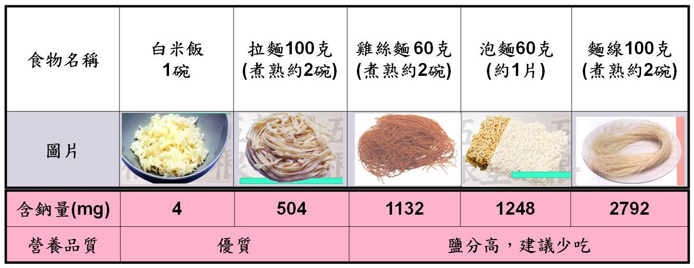
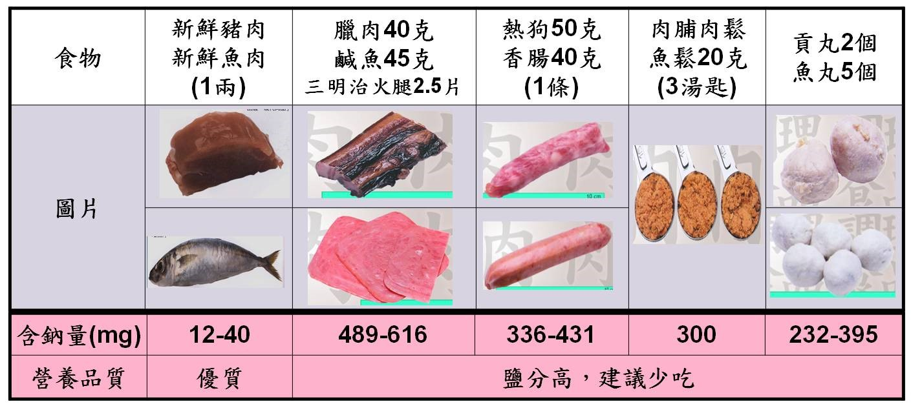

衛教資訊
移植營養衛教
護肝養腎，守護您移植後的營養健康
營養部 朱蓉倩/ 吳玉茹營養師
財團法人器官捐贈移植登錄中心資料顯示，目前等候肝臟移植人數1,210人，等候腎臟移植人數6,564人， 因等候不易，故肝臟及腎臟活體捐贈移植例數由2009年起逐年增加。能接受器官移植實屬幸運， 術後更需與醫師密切配合，照顧得來不易的肝臟腎臟喔！
住院術後高醫專業營養師於1-2天內即積極介入，提供個別化且符合高標準食品衛生安全的低菌餐食， 且於出院前對病人及家屬面對面衛教，量身打照專屬的飲食計畫。病人移植後須長期使用免疫抑制及類固醇藥物， 應預防肥胖及高血壓、高血糖及高血脂。健康就從均衡飲食開始~
-
骨質保健管理：選擇高溫殺菌低脂乳品，以黃豆製品(如：豆腐、豆干等)取代部份魚及肉，多攝取深色蔬菜及穀類，並適度運動及溫和日曬補鈣儲鈣！
長期保養應攝取足夠熱量及適量蛋白質，熱量需求約30大卡/公斤/天，蛋白質建議1公克/公斤/天， 以必須胺基酸種類齊全之蛋白質來源如黃豆製品、奶、蛋、魚、肉類為主。依每日飲食指南適當均衡攝取， 如體重介於50-70公斤者，每日攝取3-4碗全穀根莖類、豆魚肉蛋類三指大5-6塊、低脂奶1杯、蔬菜2碗、 棒球大水果3顆及適量使用烹調植物油，即可達到需求。 飲食製備要點包括：
- 維持清潔：用餐及烹調前洗手，盛裝食物之容器應清潔或煮沸消毒。
- 生熟食分開：處理生食及熟食的器具應區別，如刀具和砧板，避免生食與熟食接觸。
- 完全煮熟：應將食物煮熟煮沸後才吃，避免生食，如未全熟的牛肉魚肉及蛋、生菜沙拉等。
- 將食物儲存於適當安全的溫度下：餐食應當餐食用，避免於室溫存放過久。冰箱勿過量存放，應保持適當儲存空間及溫度(冷藏7℃以下、冷凍-18℃以下)。
- 使用安全食材及水：應注意保存期限，避免攝取過期食品，並使用安全且煮沸過的水。
-
飲食清淡，為健康加分
返家後飲食宜清淡，避免高鹽分食物，如醃製罐頭食品、肉品魚類加工食物，總之『天然ㄟ尚好』！
 
(圖片來源：台灣常見食品營養圖鑑)
-
護肝養腎，預防三高
- 體重管理：持續監測體重，維持於理想體重範圍。理想體重如何計算呢？理想體重=22×身高平方(公尺2)，增減10%範圍內都屬於理想體重喔！
- 血糖異常管理：避免攝取含糖食物飲料，減少糖醋蜜汁等高油糖料理。勿過量飲食，飢餓感時選擇低熱量食物作為點心，如：無糖茶飲、白木耳及山粉圓等。
- 血脂異常管理：避免動物皮、肥肉及豬油、奶油等富含飽和脂肪食物。並以蒸、滷、燉煮取代油炸。
- 骨質保健管理：選擇高溫殺菌低脂乳品，以黃豆製品(如：豆腐、豆干等)取代部份魚及肉，多攝取深色蔬菜及穀類，並適度運動及溫和日曬補鈣儲鈣！
小提醒！移植後服用免疫抑制劑應避免攝取葡萄柚(汁)、柚子類水果，並避免食用補品或免疫增強食品喔！